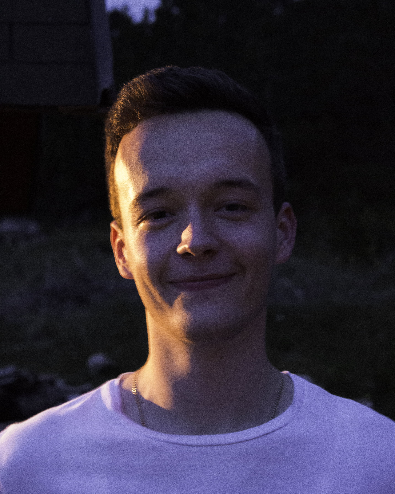

Hercegovina events
O nama
Hercegovina events je platforma pomoću koje lako pronalazite informacije o različitim događajima u
Hercegovini
Intuitivan dizajn i jednostavnost korištenja stranice vam omogućava da događaje
filtrirate po lokaciji, vremenu ili kategoriji te da brzo i efikasno pronaƒëete mjesto za izlazak ü•Ç
Značajke
Moguće je filtrirati događaje po gradu u kojem se nalazite, po danu odnosno postoji traženje događaja za danas, sutra ili pak za nadolazeći vikend te je moguće pretraživanje događaja određene kategorije, primjerice koncerti ili clubbing događaji
Pristupačnost
Događaji su dostupni svim korisnicima koji posjete našu stranicu, s obzirom da registrirani korisnici imaju dodatne pogodnosti interakcije s događajima i spremanja određenih događaja na profil
Dizajn
Na stranici želimo postići moderno i jednostavno korisničko sučelje koje je lako za
koristiti
Planiramo da izgled i sam dizajn stranice bude
intuitivan i da prati najnovije trendove dizajniranja stranice, a predivan izgled i fluidno
iskustvo korištenja su glavni preduvjeti za to
Tehnologije
<Frontend/>
Za izgled stranice koristimo temeljne industry-standard jezike kao što su HTML, CSS i JavaScript, no koristimo i najnovije frontend tehnologije kao što su Bootstrap, VueJS i razni libraryji za specijalizirane radnje kao što su animacije i određeno ponašanje browsera
<Backend/>
Programski jezik koji koristimo za backend je JavaScript.
Funkcionalnost i
stabilan rad stranice osiguran je Googleovim Firebase backend
servisom koji sadržava našu autentifikaciju odnosno provjeru valjanosti podataka, real-time bazu
podataka, pohranu slika i hosting. Također koristimo i dodatne frameworke JavaScripta kao što su
NodeJS, a za kontrolu verzije sustava i suradnju developera koristimo GitHub


Developeri
I za kraj, oni zaslužni za ovo sve, oni koji su razvili ovaj sustav od samog početka
Josip Leko
Student, 21 godina
najviše se bavi razvijanjem web i mobilnih aplikacija, najviše koristi
JavaScript i Dart
2018. - Informatika, FPMOZ

/josip-leko-00284219a

/josip.leko.39

@josip.leko
Mario Duspara
Student, 21 godina
pretežno razvija web aplikacije za to koristi Javascript,Firebase
2018. - Informatika, FPMOZ
/mario-duspara-4500a41a1
/Dule117
@dule777
Motiv
Pojedinačnim traženjem po društvenim mrežama koji DJ nastupa u kojem klubu, došli smo do ideje da bi
bilo super imati neku web-stranicu na
kojoj imamo sve događaje na našem području da bi lako mogli naći mjesto za izlazak, no sličan sustav
nismo našli.
Nadalje povodom korona
virusa, znali smo da će se organizirati razni događaji čim to
bude moguće tako da će potražnja za ovakvim sustavom biti ogromna